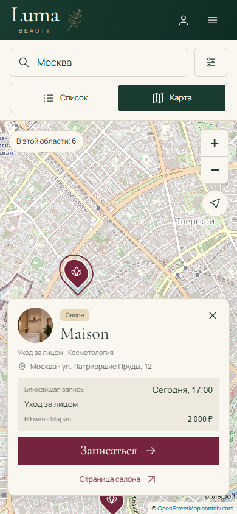
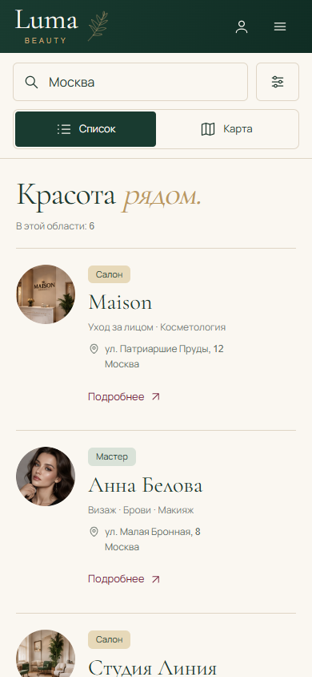
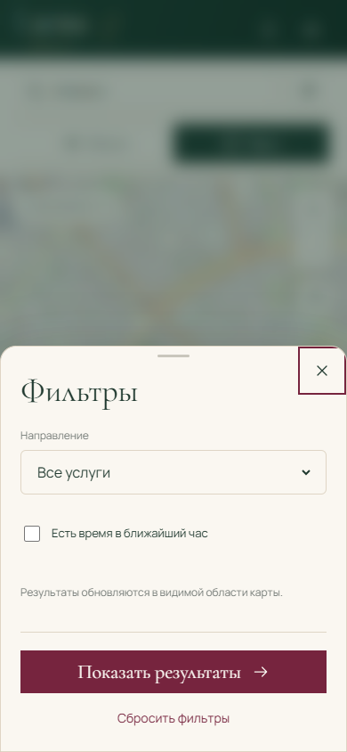

<!doctype html><html lang="ru"><meta charset="utf-8"><title>Карта — мобильные экраны</title><style>@font-face{font-family:Cormorant;src:url('../../2026-10-11-luma/booking-review-01/assets/cormorant-garamond-cyrillic-400-normal-DD2KOZkl.woff2')}*{box-sizing:border-box}body{margin:0;padding:35px 36px 30px;background:#f1ece2;color:#193b30;width:1284px}header{display:flex;justify-content:space-between;align-items:baseline;margin-bottom:26px}h1{font:44px Cormorant,Georgia;margin:0}header span{font:12px Arial;color:#7d7a70}main{display:flex;gap:21px}section{width:390px}h2{font:26px Cormorant,Georgia;margin:0 0 12px}img{display:block;width:390px;height:844px;border:1px solid #d9cebd;border-radius:8px}footer{font:12px/1.6 Arial;color:#7d7a70;padding-top:20px}</style><header><h1>Красота рядом. На вашем экране.</h1><span>U-09 · уточнение для согласования · 14.10.2026</span></header><main><section><h2>01 / Карта и выбранное место</h2></section><section><h2>02 / Список той же области</h2></section><section><h2>03 / Компактные фильтры</h2></section></main><footer>Единая шапка · круглые фото · карта и список сохраняют поиск и выбор · без нижней навигации<br>Имена, фото, время и цены иллюстрируют компоновку. Данные приложения не изменены.</footer></html>
